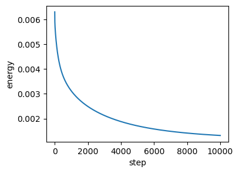
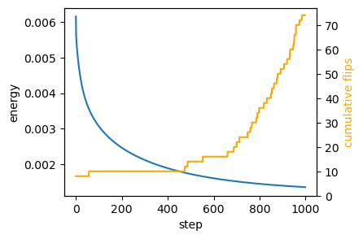
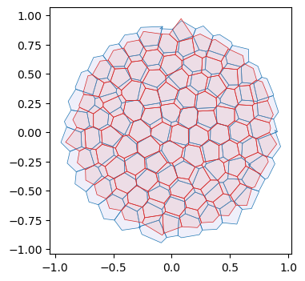

import copy
import dataclasses
from typing import Tuple
import numpy as np
import matplotlib.pyplot as plt
import jax
import jax.numpy as jnp
import functools
import diffrax
from jaxtyping import Float, Bool, Int
from enum import IntEnum
from tqdm.notebook import tqdmArea-perimeter self-propelled Voronoi model
After the toy example of notebook 02, let’s try to implement a slightly more complicated model, the self-propelled Voronoi area-perimeter Voronoi (VAP) model of Bi et al., 2016. This 2D model comprises most of the ingredients we will see in more general simulations, from a coding perspective.
In brief, in the VAP, cells are modeled as the Voronoi tesselation for a series of centroids \(\mathbf{v}_i\) (our triangulation vertices). Their overdamped dynamics comprises two terms: self-propulsion and relaxation of an elastic energy: \[\partial_t \mathbf{v}_i = -\nabla_{\mathbf{v}_i} E_{AP} + v_0 \hat{\mathbf{n}}_i\] For each cell \(i\), \(\hat{\mathbf{n}}_i\) is a unit vector (so we will represent it by an angle \(\theta_i\)) that determines the direction of motion. Units of time are chosen so that the coefficient of \(\nabla E_{AP}\) is \(1\). The energy is defined in terms of the Voronoi area \(a_i\) and Voronoi perimeter \(p_i\) of each cell: \[E_{AP} = \sum_i k_a(a_i-a_0)^2 + k_p(p_i-p_0)^2 \] where \(k_a, k_p\) are elastic constants, and \(a_0, p_0\) are the target area and perimeter. They define the “shape index” \(s_0= p_0/\sqrt{a_0}\). The key physics is that above a critical shape index \(s_0^*\), the model has a degenerate set of ground states, since for a large \(p_0\), there are many polygons with the given target area and perimeter (think floppy balloon).
The orientation \(\theta_i\) of each cell is also dynamic. It undergoes rotational diffusion: \[d\theta_i = D_\theta dW_{t, i} \] where \(dW_{t,i}\) is Brownian motion, independent for each cell \(i\), and \(D_\theta\) is the diffusion constant.
Numerics
The cell array connectivity will be represented by a HeMesh (see notebook 01). The geometry is fully described by the triangulation vertex positions, the Voronoi cell centroids. We also need a scalar vertex attribute for the angle \(\theta_i\).
To numerically calculate the energy \(E_{AP}\), we can obtain Voronoi area and perimeter for each mesh “corner” using the triangulax.trigonometry module. Then we can use the gather/scatter operation triangulax.meshsum_he_to_vertex_opposite to sum all corners belonging to a cell (see notebook 01, “Computing cell areas, perimeters, etc via corners”). Boundary cells can be handled by “mirroring”, i.e., all corners count twice when computing the area/perimeter. Given the energy, JAX autodiff gives us the gradients.
To time-evolve the mesh geometry, we can use diffrax, like in notebook 02. diffrax can also deal with SDEs, like the Langevin equation for cell angles. After each timestep, we need to check if the Voronoi edge lengths are below some threshold (the edge lengths can be computed on the fly), and, if so, we need to carry out edge flips. See notebook 01. We need to ensure that we do not immidiately “re-flip” an edge. This could be done, for example, via “cool down” period (an edge flipped at step \(t\) cannot be flipped again for the next few steps), or by calculating if the edge is shrinking or growing.
It would also be great to generate some visualizations of the time evolution of the mesh using the cellplot function, maybe with a user-controlled slider to show the different time steps.
The code should respect the coding style (JAX-compatibility, type hints, etc) used in previous notebooks. To start, let’s define the energy and check that relaxation of the energy leads to a state where the \(a_i=a_0\) and \(p_i=p_0\) constraints are fullfilled (as good as possible).
Setup
jax.config.update("jax_enable_x64", True)
jax.config.update("jax_debug_nans", True)
jax.config.update("jax_log_compiles", False)from triangulax import mesh as msh
from triangulax.mesh import TriMesh, HeMesh, GeomMesh
from triangulax import trigonometry as trigfrom importlib import reload
#reload(msh)
reload(trig)<module 'triangulax.trigonometry' from '/Users/nc1333/Documents/Princeton/Coding/triangulax/triangulax/trigonometry.py'>Read in test data
mesh = TriMesh.read_obj("test_meshes/disk.obj")
hemesh = HeMesh.from_triangles(mesh.vertices.shape[0], mesh.faces)
geommesh = GeomMesh(*hemesh.n_items, vertices=mesh.vertices)
geommesh = msh.set_voronoi_face_positions(geommesh, hemesh)
hemesh, geommeshWarning: readOBJ() ignored non-comment line 3:
o flat_tri_ecmc(HeMesh(N_V=131, N_HE=708, N_F=224), GeomMesh(D=2,N_V=131, N_HE=708, N_F=224))fig, ax = plt.subplots(figsize=(4, 4))
ax.add_collection(msh.cellplot(hemesh, geommesh.face_positions,
cell_colors=np.array([0.7, 0.7, 0.9, 0.4]),
mpl_polygon_kwargs={"lw": 0.5, "ec": "k"}))
ax.set_aspect("equal")
ax.autoscale_view();
Voronoi cell geometry (area & perimeter)
We compute areas from corner contributions and perimeters from dual-edge lengths, using gather/scatter operations on the half-edge mesh. Boundary cells are handled by mirroring (doubling the area/perimeter).
@functools.partial(jax.jit, static_argnames=['clip_max'])
def get_cell_area(geommesh: GeomMesh, hemesh: HeMesh, clip_max: float = 10) ->Float[jax.Array, " n_vertices"]:
"""Compute Voronoi area for each cell. Clips corner values for stability."""
a = hemesh.dest[hemesh.nxt]
b = hemesh.dest[hemesh.prv]
c = hemesh.dest
corner_areas = jax.vmap(trig.get_voronoi_corner_area)(
geommesh.vertices[a], geommesh.vertices[b], geommesh.vertices[c])
corner_areas = jnp.where(hemesh.is_bdry_he, 0, corner_areas)
#corner_areas = jnp.clip(corner_areas, -clip_max, clip_max)
cell_areas = msh.sum_he_to_vertex_opposite(hemesh, corner_areas)
cell_areas = jnp.where(hemesh.is_bdry, 2.0 * cell_areas, cell_areas)
return cell_areas
@functools.partial(jax.jit, static_argnames=['clip_max'])
def get_cell_perimeter(geommesh: GeomMesh, hemesh: HeMesh, clip_max: float = 10) -> Float[jax.Array, " n_vertices"]:
"""Compute Voronoi perimeters for each cell. Clips corner values for stability."""
a = hemesh.dest[hemesh.nxt]
b = hemesh.dest[hemesh.prv]
c = hemesh.dest
corner_perims = jax.vmap(trig.get_voronoi_corner_perimeter)(
geommesh.vertices[a], geommesh.vertices[b], geommesh.vertices[c])
corner_perims = jnp.where(hemesh.is_bdry_he, 0, corner_perims)
#corner_perims = jnp.clip(corner_perims, 0, clip_max)
cell_perims = msh.sum_he_to_vertex_opposite(hemesh, corner_perims)
cell_perims = jnp.where(hemesh.is_bdry, 2.0 * cell_perims, cell_perims)
return cell_perims
@jax.jit
def energy_ap(geommesh: GeomMesh, hemesh: HeMesh, a0: float, p0: float,
k_a: float = 1.0, k_p: float = 1.0) -> Float[jax.Array, ""]:
"""Area-perimeter energy for Voronoi cells."""
cell_areas = get_cell_area(geommesh, hemesh)
cell_perimeters = get_cell_perimeter(geommesh, hemesh)
return jnp.mean(k_a * (cell_areas - a0) ** 2 + k_p * (cell_perimeters - p0) ** 2)cell_areas, cell_perimeters = (get_cell_area(geommesh, hemesh), get_cell_perimeter(geommesh, hemesh))
a_mean, p_mean = (cell_areas[~hemesh.is_bdry].mean(), cell_perimeters[~hemesh.is_bdry].mean())
a_mean, p_mean, p_mean/np.sqrt(a_mean)--------------------------------------------------------------------------- NonConcreteBooleanIndexError Traceback (most recent call last) Cell In[288], line 1 ----> 1 cell_areas, cell_perimeters = (get_cell_area(geommesh, hemesh), get_cell_perimeter(geommesh, hemesh)) 3 a_mean, p_mean = (cell_areas[~hemesh.is_bdry].mean(), cell_perimeters[~hemesh.is_bdry].mean()) 4 a_mean, p_mean, p_mean/np.sqrt(a_mean) [... skipping hidden 15 frame] Cell In[287], line 9, in get_cell_area(geommesh, hemesh, clip_max) 6 c = hemesh.dest 7 corner_areas = jax.vmap(trig.get_voronoi_corner_area)( 8 geommesh.vertices[a], geommesh.vertices[b], geommesh.vertices[c]) ----> 9 corner_areas = corner_areas.at[hemesh.is_bdry_he].set(0.0) 10 #corner_areas = jnp.clip(corner_areas, -clip_max, clip_max) 11 cell_areas = msh.sum_he_to_vertex_opposite(hemesh, corner_areas) File ~/miniforge3/envs/triangulax/lib/python3.14/site-packages/jax/_src/numpy/array_methods.py:854, in _IndexUpdateRef.set(self, values, indices_are_sorted, unique_indices, mode, out_sharding, wrap_negative_indices) 852 assert isinstance(out_sharding, (NamedSharding, PartitionSpec)) 853 out_sharding = canonicalize_sharding(out_sharding, '.set') --> 854 return scatter._scatter_update( 855 self.array, self.index, values, lax_slicing.scatter, 856 indices_are_sorted=indices_are_sorted, unique_indices=unique_indices, 857 mode=mode, out_sharding=out_sharding, # type: ignore 858 normalize_indices=wrap_negative_indices) File ~/miniforge3/envs/triangulax/lib/python3.14/site-packages/jax/_src/ops/scatter.py:81, in _scatter_update(x, idx, y, scatter_op, indices_are_sorted, unique_indices, mode, normalize_indices, out_sharding) 77 y = jnp.asarray(y) 79 # XLA gathers and scatters are very similar in structure; the scatter logic 80 # is more or less a transpose of the gather equivalent. ---> 81 treedef, static_idx, dynamic_idx = indexing.split_index_for_jit(idx, x.shape) 83 internal_scatter = partial( 84 _scatter_impl, scatter_op=scatter_op, treedef=treedef, 85 static_idx=static_idx, indices_are_sorted=indices_are_sorted, 86 unique_indices=unique_indices, mode=mode, 87 normalize_indices=normalize_indices) 88 if out_sharding is not None: File ~/miniforge3/envs/triangulax/lib/python3.14/site-packages/jax/_src/numpy/indexing.py:755, in split_index_for_jit(idx, shape) 751 raise TypeError(f"JAX does not support string indexing; got {idx=}") 753 # Expand any (concrete) boolean indices. We can then use advanced integer 754 # indexing logic to handle them. --> 755 idx = _expand_bool_indices(idx, shape) 757 leaves, treedef = tree_flatten(idx) 758 dynamic = [None] * len(leaves) File ~/miniforge3/envs/triangulax/lib/python3.14/site-packages/jax/_src/numpy/indexing.py:1092, in _expand_bool_indices(idx, shape) 1088 abstract_i = core.get_aval(i) 1090 if not core.is_concrete(i): 1091 # TODO(mattjj): improve this error by tracking _why_ the indices are not concrete -> 1092 raise errors.NonConcreteBooleanIndexError(abstract_i) 1093 elif np.ndim(i) == 0: 1094 out.append(bool(i)) NonConcreteBooleanIndexError: Array boolean indices must be concrete; got bool[708] See https://docs.jax.dev/en/latest/errors.html#jax.errors.NonConcreteBooleanIndexError
# double check against "manual" area and "perimeter" computation using mesh traversalEnergy relaxation (no self-propulsion)
We first relax the area–perimeter energy to verify that the constraints are satisfied.
@jax.jit
def relax_energy_step(geommesh: GeomMesh, hemesh: HeMesh,
a0: float, p0: float,
step_size: float = 0.01,
k_a: float = 1.0, k_p: float = 1.0) -> Tuple[GeomMesh, Float[jax.Array, ""]]:
loss, grad = jax.value_and_grad(energy_ap)(geommesh, hemesh, a0, p0, k_a, k_p)
updated_vertices = geommesh.vertices - step_size * grad.vertices
geommesh_updated = dataclasses.replace(geommesh, vertices=updated_vertices)
return geommesh_updated, loss
# energy parameters
a0 = a_mean
s0 = 3.5
p0 = s0*jnp.sqrt(a0)
# relaxation parameters
step_size = 0.02
n_steps = 10000
geommesh_relaxed = copy.copy(geommesh)
losses = []
for _ in range(n_steps):
geommesh_relaxed, loss = relax_energy_step(geommesh_relaxed, hemesh, a0, p0, step_size=step_size)
losses.append(loss)
losses = jnp.array(losses)fig = plt.figure(figsize=(4, 3))
plt.plot(np.asarray(losses))
plt.xlabel("step")
plt.ylabel("energy");
geommesh_relaxed = msh.set_voronoi_face_positions(geommesh_relaxed, hemesh)
fig, ax = plt.subplots(figsize=(4, 4))
ax.add_collection(msh.cellplot(hemesh, geommesh.face_positions,
cell_colors=np.array([0.7, 0.7, 0.9, 0.2]),
mpl_polygon_kwargs={"lw": 0.5, "ec": "tab:blue"}))
ax.add_collection(msh.cellplot(hemesh, geommesh_relaxed.face_positions,
cell_colors=np.array([0.9, 0.6, 0.6, 0.2]),
mpl_polygon_kwargs={"lw": 0.5, "ec": "tab:red"}))
ax.set_aspect("equal")
ax.autoscale_view();
areas_relaxed, perim_relaxed = (get_cell_area(geommesh, hemesh), get_cell_perimeter(geommesh, hemesh))
jnp.abs(areas_relaxed - a0)[hemesh.is_bdry].mean(), jnp.abs(perim_relaxed - p0)[hemesh.is_bdry].mean()(Array(0.09000695, dtype=float64), Array(0.04928358, dtype=float64))Relaxation with T1s
Next, let’s allow T1s. To ensure we don’t flip the same edge multiple times, let’s use a cooldown period.
cooldown_steps = 5
l_min_T1 = -0.01
n_steps = 10000
cooldown_counter = jnp.zeros(hemesh.n_hes)
sim_steps = jnp.arange(n_steps)this is the simulation as a simple for loop:
hemesh_relaxed = copy.copy(hemesh) geommesh_relaxed = copy.copy(geommesh) losses = [] flip_count = [] for _ in tqdm(sim_steps): # step energy geommesh_relaxed, loss = relax_energy_step(geommesh_relaxed, hemesh_relaxed, a0, p0, step_size=step_size) # compute signed edge lengths, flip, and update cooldown counter face_positions = msh.get_voronoi_face_positions(geommesh_relaxed.vertices, hemesh_relaxed) edge_lengths = msh.get_signed_dual_he_length(geommesh_relaxed.vertices, face_positions, hemesh_relaxed) to_flip = (edge_lengths < l_min_T1) & (cooldown_counter == 0) hemesh_relaxed = msh.flip_all(hemesh_relaxed, to_flip) cooldown_counter = jnp.where(to_flip, cooldown_steps, jnp.clip(cooldown_counter-1, 0)) losses.append(loss) flip_count.append(to_flip.sum())
losses = jnp.array(losses) flip_count = jnp.array(flip_count)
# package simulation time step into a function for jax.lax.scan
@jax.jit
def scan_fun(carry: Tuple[GeomMesh,HeMesh, Int[jax.Array, " n_steps"]], x: Float[jax.Array, " n_steps"]):
geommesh_relaxed, hemesh_relaxed, cooldown_counter = carry
# step energy
geommesh_relaxed, loss = relax_energy_step(geommesh_relaxed, hemesh_relaxed, a0, p0, step_size=step_size)
# compute signed edge lengths, flip, and update cooldown counter
face_positions = msh.get_voronoi_face_positions(geommesh_relaxed.vertices, hemesh_relaxed)
edge_lengths = msh.get_signed_dual_he_length(geommesh_relaxed.vertices, face_positions, hemesh_relaxed)
to_flip = (edge_lengths < l_min_T1) & (cooldown_counter == 0)
hemesh_relaxed = msh.flip_all(hemesh_relaxed, to_flip)
# update cooldown counter
cooldown_counter = jnp.where(to_flip, cooldown_steps, jnp.clip(cooldown_counter-1, 0))
return (geommesh_relaxed, hemesh_relaxed, cooldown_counter), jnp.array([loss, to_flip.sum()])
(geommesh_relaxed, hemesh_relaxed, _), return_arr = jax.lax.scan(scan_fun, (geommesh, hemesh, cooldown_counter), sim_steps)
losses, flip_count = return_arr.Tfig = plt.figure(figsize=(4, 3))
plt.plot(losses[::int(n_steps/1000)])
plt.xlabel("step")
plt.ylabel("energy")
# add a twin y axis that shows the cummulative number of flips
ax2 = plt.gca().twinx()
ax2.plot(jnp.cumsum(flip_count)[::int(n_steps/1000)], color="orange")
ax2.set_ylabel("cumulative flips", color="orange")
ax2.set_ylim([0,flip_count.sum()+1])
geommesh_relaxed = msh.set_voronoi_face_positions(geommesh_relaxed, hemesh_relaxed)
fig, ax = plt.subplots(figsize=(4, 4))
ax.add_collection(msh.cellplot(hemesh, geommesh.face_positions,
cell_colors=np.array([0.7, 0.7, 0.9, 0.2]),
mpl_polygon_kwargs={"lw": 0.5, "ec": "tab:blue"}))
ax.add_collection(msh.cellplot(hemesh_relaxed, geommesh_relaxed.face_positions,
cell_colors=np.array([0.9, 0.6, 0.6, 0.2]),
mpl_polygon_kwargs={"lw": 0.5, "ec": "tab:red"}))
ax.set_aspect("equal")
ax.autoscale_view();
areas_relaxed, perim_relaxed = (get_cell_area(geommesh, hemesh), get_cell_perimeter(geommesh, hemesh))
jnp.abs(areas_relaxed - a0)[~hemesh.is_bdry].mean()/a0, jnp.abs(perim_relaxed - p0)[~hemesh.is_bdry].mean()/p0(Array(0.09045905, dtype=float64), Array(0.09506297, dtype=float64))Using a diffrax solver
Note that to use, say, an adaptive time stepping algorithm, we would need to pass the current time step via the carry of jax.lax.scan to the next timestep. We would probably also like to return the timesteps taken, then.
# Diffrax-based relaxation step (replaces forward Euler inside the scan)
@jax.jit
def ap_vector_field(
t: Float[jax.Array, ""],
y: GeomMesh,
args: Tuple[HeMesh, float, float, float, float],
) -> GeomMesh:
"""RHS for overdamped relaxation of area-perimeter energy."""
hemesh, a0, p0, k_a, k_p = args
grad = jax.grad(energy_ap)(y, hemesh, a0, p0, k_a, k_p)
return jax.tree_util.tree_map(lambda x: -x, grad)
term = diffrax.ODETerm(ap_vector_field)
solver = diffrax.Tsit5()
dt = 0.02
step_times = dt * jnp.arange(n_steps + 1)@jax.jit
def scan_fun_diffrax(
carry: Tuple[
GeomMesh,
HeMesh,
Float[jax.Array, " n_hes"],
Float[jax.Array, ""], # current time
object, # solver state
],
tnext: Float[jax.Array, ""],
) -> Tuple[
Tuple[
GeomMesh,
HeMesh,
Float[jax.Array, " n_hes"],
Float[jax.Array, ""],
object,
],
Float[jax.Array, " 2"],
]:
geommesh_relaxed, hemesh_relaxed, cooldown_counter, tprev, solver_state = carry
args = (hemesh_relaxed, a0, p0, 1.0, 1.0)
geommesh_relaxed, _, _, solver_state, _ = solver.step(
term, tprev, tnext, geommesh_relaxed, args, solver_state, made_jump=False
)
loss = energy_ap(geommesh_relaxed, hemesh_relaxed, a0, p0)
face_positions = msh.get_voronoi_face_positions(geommesh_relaxed.vertices, hemesh_relaxed)
edge_lengths = msh.get_signed_dual_he_length(geommesh_relaxed.vertices, face_positions, hemesh_relaxed)
to_flip = (edge_lengths < l_min_T1) & (cooldown_counter == 0)
hemesh_relaxed = msh.flip_all(hemesh_relaxed, to_flip)
cooldown_counter = jnp.where(to_flip, cooldown_steps, jnp.clip(cooldown_counter - 1, 0))
return (geommesh_relaxed, hemesh_relaxed, cooldown_counter, tnext, solver_state), jnp.array([loss, to_flip.sum()])init_solver_state = solver.init(term, step_times[0], step_times[1], geommesh, (hemesh, a0, p0, 1.0, 1.0))
init = (geommesh, hemesh, cooldown_counter, step_times[0], init_solver_state)(geommesh_relaxed, hemesh_relaxed, _, _, _), return_arr = jax.lax.scan(
scan_fun_diffrax, init, step_times[1:])
losses, flip_count = return_arr.Tfig = plt.figure(figsize=(4, 3))
plt.plot(losses[::int(n_steps/1000)])
plt.xlabel("step")
plt.ylabel("energy")
ax2 = plt.gca().twinx()
ax2.plot(jnp.cumsum(flip_count)[::int(n_steps/1000)], color="orange")
ax2.set_ylabel("cumulative flips", color="orange")
ax2.set_ylim([0, flip_count.sum() + 1])
geommesh_relaxed = msh.set_voronoi_face_positions(geommesh_relaxed, hemesh_relaxed)
fig, ax = plt.subplots(figsize=(4, 4))
ax.add_collection(msh.cellplot(hemesh, geommesh.face_positions,
cell_colors=np.array([0.7, 0.7, 0.9, 0.2]),
mpl_polygon_kwargs={"lw": 0.5, "ec": "tab:blue"}))
ax.add_collection(msh.cellplot(hemesh_relaxed, geommesh_relaxed.face_positions,
cell_colors=np.array([0.9, 0.6, 0.6, 0.2]),
mpl_polygon_kwargs={"lw": 0.5, "ec": "tab:red"}))
ax.set_aspect("equal")
ax.autoscale_view();
Overdamped dynamics with self-propulsion (deterministic)
Next, let’s add the self-propulsion term. We initialize the angles \(\theta_i\) at random. We can store the angles as an extra vertex_attrib in our geommesh, using the functionality of the GeomMesh dataclass. We already have an IntEnum which we can use as keys to the vertex_attrib dictionary, like described in notebook 01.
As a first step, we can keep the orientations fixed and just integrate \(\partial_t \mathbf{v}_i = -\nabla_{\mathbf{v}_i} E_{AP} + v_0\hat{\mathbf{n}}_i\), like in the above example. We only simulate for a couple of steps.
class VertexAttribs(IntEnum):
SELF_PROPULSION_ORIENTATION = 1jax.config.update("jax_disable_jit", False)# initialize orientations and store as a vertex attribute
key = jax.random.key(0)
theta0 = jax.random.uniform(key, shape=(hemesh.n_vertices,), minval=0.0, maxval=2 * jnp.pi)
geommesh_sp = copy.copy(geommesh)
geommesh_sp = dataclasses.replace(
geommesh_sp,
vertex_attribs={VertexAttribs.SELF_PROPULSION_ORIENTATION: theta0},
)
@jax.jit
def ap_selfprop_vector_field(
t: Float[jax.Array, ""],
y: GeomMesh,
args: Tuple[HeMesh, float, float, float, float, float],
) -> GeomMesh:
"""RHS for overdamped area-perimeter dynamics with self-propulsion."""
hemesh, a0, p0, v0, k_a, k_p = args
theta = y.vertex_attribs[VertexAttribs.SELF_PROPULSION_ORIENTATION]
grad = jax.grad(energy_ap)(y, hemesh, a0, p0, k_a, k_p)
n_hat = jnp.stack([jnp.cos(theta), jnp.sin(theta)], axis=-1)
velocity = -grad.vertices + v0 * n_hat
zero_vertex_attribs = {key: jnp.zeros_like(val) for key, val in y.vertex_attribs.items()}
return dataclasses.replace(
y,
vertices=velocity,
vertex_attribs=zero_vertex_attribs,
)
term_sp = diffrax.ODETerm(ap_selfprop_vector_field)
solver_sp = diffrax.Tsit5()
dt_sp = 0.02
n_steps_sp = 20 # begins to fail at 24. degenerate triang at 21
v0_sp = 0.05
step_times_sp = dt_sp * jnp.arange(n_steps_sp + 1)
cooldown_steps = 5# check magnitude of the gradient forces vs the self-propulsion
grad0 = jax.grad(energy_ap)(geommesh_sp, hemesh, a0, p0, 1, 1).vertices
sp0 = v0_sp*jnp.stack([jnp.cos(theta0), jnp.sin(theta0)], axis=-1)
jnp.linalg.norm(sp0, axis=-1).mean() / jnp.linalg.norm(grad0, axis=-1).mean()Array(11.22962167, dtype=float64)@jax.jit
def scan_fun_selfprop(
carry: Tuple[
GeomMesh,
HeMesh,
Float[jax.Array, " n_hes"],
Float[jax.Array, ""],
object,
],
tnext: Float[jax.Array, ""],
) -> Tuple[
Tuple[
GeomMesh,
HeMesh,
Float[jax.Array, " n_hes"],
Float[jax.Array, ""],
object,
],
GeomMesh,
]:
geommesh_curr, hemesh_curr, cooldown_counter, tprev, solver_state = carry
args = (hemesh_curr, a0, p0, v0_sp, 1.0, 1.0)
geommesh_next, _, _, solver_state, _ = solver_sp.step(
term_sp, tprev, tnext, geommesh_curr, args, solver_state, made_jump=False
)
face_positions = msh.get_voronoi_face_positions(geommesh_next.vertices, hemesh_curr)
edge_lengths = msh.get_signed_dual_he_length(geommesh_next.vertices, face_positions, hemesh_curr)
to_flip = (edge_lengths < l_min_T1) & (cooldown_counter == 0)
hemesh_next = msh.flip_all(hemesh_curr, to_flip)
cooldown_counter = jnp.where(to_flip, cooldown_steps, jnp.clip(cooldown_counter - 1, 0))
return (geommesh_next, hemesh_next, cooldown_counter, tnext, solver_state), geommesh_nextcooldown_counter_sp = jnp.zeros(hemesh.n_hes)
init_solver_state_sp = solver_sp.init(
term_sp, step_times_sp[0], step_times_sp[1], geommesh_sp, (hemesh, a0, p0, v0_sp, 1.0, 1.0)
)
init = (geommesh_sp, hemesh, cooldown_counter_sp, step_times_sp[0], init_solver_state_sp)(geommesh_final, hemesh_final, _, _, _), traj = jax.lax.scan(scan_fun_selfprop, init, step_times_sp[1:])jnp.isnan(geommesh_final.vertices).any()Array(False, dtype=bool)grad = jax.grad(energy_ap)(geommesh_final, hemesh_final, a0, p0, k_a=1, k_p=0)
grad_mag = jnp.linalg.norm(grad.vertices, axis=-1)# not good! the problem comes from the area term. and it comes from the boundary vertex
# looks like the areas of the boundry cells are very large and seemingly incorrect.
jnp.median(grad_mag), jnp.max(grad_mag), jnp.argmax(grad_mag)(Array(0.00014209, dtype=float64),
Array(0.14037264, dtype=float64),
Array(121, dtype=int64))areas = get_cell_area(geommesh_final, hemesh_final)
jnp.median(areas), areas[121], jnp.median(areas[hemesh_final.is_bdry]), jnp.median(areas[~hemesh_final.is_bdry])(Array(0.02915907, dtype=float64),
Array(0.21465219, dtype=float64),
Array(0.12569305, dtype=float64),
Array(0.02772169, dtype=float64))## let's see if there is an issue with the corner areas.
a = hemesh_final.dest[hemesh_final.nxt]
b = hemesh_final.dest[hemesh_final.prv]
c = hemesh_final.dest
corner_areas = jax.vmap(trig.get_voronoi_corner_area)(
geommesh_final.vertices[a], geommesh_final.vertices[b], geommesh_final.vertices[c])corner_areas[hemesh_final.is_bdry_he].mean(), corner_areas[~hemesh_final.is_bdry_he].mean()(Array(0.05089609, dtype=float64), Array(0.00460842, dtype=float64))# do the boundary corners contribute to the cell areas? they should not!
corner_areas_bdry = corner_areas.at[~hemesh_final.is_bdry_he].set(0.0)msh.sum_he_to_vertex_opposite(hemesh_final, corner_areas_bdry)Array([0.02517454, 0. , 0. , 0. , 0. ,
0. , 0. , 0. , 0. , 0.0487042 ,
0.08644553, 0. , 0. , 0. , 0. ,
0. , 0. , 0. , 0. , 0. ,
0.06499988, 0.02339914, 0. , 0. , 0. ,
0. , 0. , 0. , 0. , 0. ,
0. , 0. , 0.04013333, 0.05692478, 0.04495243,
0. , 0. , 0. , 0. , 0. ,
0. , 0. , 0. , 0. , 0. ,
0. , 0.05362868, 0.05776412, 0. , 0. ,
0. , 0. , 0. , 0. , 0. ,
0. , 0. , 0. , 0.04366292, 0. ,
0. , 0. , 0. , 0. , 0. ,
0. , 0. , 0. , 0. , 0.04170987,
0.07925454, 0. , 0. , 0. , 0. ,
0. , 0. , 0. , 0. , 0. ,
0.03237783, 0. , 0. , 0. , 0. ,
0.05462124, 0.02364952, 0. , 0. , 0. ,
0. , 0.07522129, 0. , 0. , 0. ,
0. , 0. , 0. , 0. , 0.05750567,
0.0249209 , 0. , 0. , 0. , 0. ,
0. , 0. , 0.02230205, 0.07650705, 0. ,
0.02905593, 0.04757567, 0.03389725, 0.07936265, 0.07846599,
0.02125864, 0.05127288, 0.07437767, 0.02547047, 0.02517226,
0.09122537, 0.09751292, 0.05873222, 0.06936521, 0. ,
0. , 0. , 0. , 0. , 0. ,
0.01565448], dtype=float64)plt.hist(corner_areas[~hemesh_final.is_bdry_he], bins=100); # outliers; likely from boundary
geommesh_sp = msh.set_voronoi_face_positions(geommesh_sp, hemesh)
geommesh_final = msh.set_voronoi_face_positions(geommesh_final, hemesh_final)
fig, ax = plt.subplots(figsize=(4, 4))
#plt.triplot(*geommesh_sp.vertices.T, hemesh.faces)
plt.triplot(*geommesh_final.vertices.T, hemesh_final.faces)
plt.scatter(*geommesh_final.vertices.T, c=areas, cmap="viridis", s=20, vmin=0)
#ax.add_collection(msh.cellplot(hemesh, geommesh_sp.face_positions,
# cell_colors=np.array([0.7, 0.7, 0.9, 0.2]),
# mpl_polygon_kwargs={"lw": 0.5, "ec": "tab:blue"}))
ax.add_collection(msh.cellplot(hemesh_final, geommesh_final.face_positions,
cell_colors=np.array([0.9, 0.6, 0.6, 0.2]),
mpl_polygon_kwargs={"lw": 0.5, "ec": "tab:red"}))
ax.set_aspect("equal")
ax.autoscale_view();
Stochastic orientation + T1 flips (step-by-step)
We now include rotational diffusion for \(\theta_i\) and perform edge flips when Voronoi dual edges fall below a threshold. A short cooldown avoids immediate re-flips.
Visualize trajectory
Let’s add an ipywidget-based slider plot that allows us to visualize the trajectory of the mesh’s time evolution.